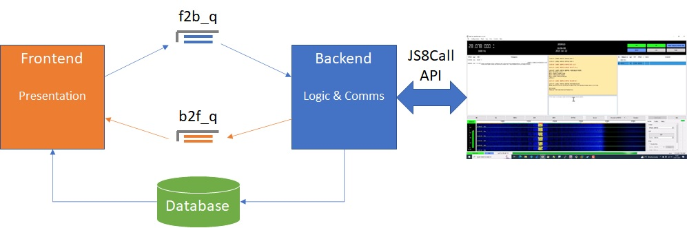

This microblog client (mbclient) is written in Python so that it can be run on a broad range of platforms. The GUI is based on the tkinter library, which is portable across platforms. Data is stored in a SQLite database, which comes bundled with Python and, again, chosen for its wide platform support. The database is used to provide persistence, including the saving of settings.
Python persistent object facilities (like pickle) were considered, but these wouldn't meet all the data needs and are more complex to maintain.

mbclient comprises three components:
Each of these components runs in its own Python thread. Python multithreading does not equate to OS multithreading, i.e. it does not use multiple cores. However, the client will spend a lot of time waiting for UI events and network IO (API calls to JS8Call) and so it should meet our needs. Python multiprocessing could be considered at a later stage, if necessary.
Frontend-to-backend and backend-to-comms messages are objects with getter and setter methods. The messages are defined in message_q.py. The messages are placed on Python queues (queue.Queue) and these are instantiated in the MbClient class.
Communication between the frontend and backend is via message objects placed on one of two Python FIFO Queues; f2b_q for frontend to backend messaging, and b2f_q for backend to frontend. The sending code puts a new messages on the queue, and the receiving code gets the message from the queue. There are three types of message:
Here's an example of a matching request and response:
ts = 1676976154.154798,
req_ts = 0.0,
cli_input = '',
cmd = 'S',
blog = 'NEWSEN',
station = 'K7GHI',
frequency = 14078000,
post_id = 0,
post_date = 0,
op = '',
param = '',
rc = 0
ts = 1676976154.1837683,
req_ts = 1676976154.154798,
cli_input = '',
cmd = 'S',
blog = 'NEWSEN',
station = 'K7GHI',
frequency = 14078000,
post_id = 0,
post_date = 0,
op = '',
param = '',
rc = 0
In this example, the frontend is sending a request to the backend to change the currently selected blog in the blog list. Notice how the req_ts value matches the ts value of the request. A non-zero Response Code (rc) would indicate an error has occurred in the backend, e.g. if we try to set the selected blog to a blog that doesn't exist in the list.
There is no synchronisation between requests and responses. In theory, the backend may process multiple requests before a response is sent, and the responses are not guaranteed to be in an order that matches the requests. There is, however, a correlation mechanism to match responses to earlier requests. Every message is timestamped. A response contains a value req_ts which gives the timestamp of the matching request message.
Although we have the message queues, the majority of backend to frontend data is passed via the database. The job of the frontend is to present the data in the database. The frontend never makes changes to the database. When the frontend requires a change that affects the database, such as a change of selected blog:
The frontend checks for messages from the backend on the b2f_q queue by trying a non-blocking get for
a message every 200ms. If the queue is empty, the get causes a queue.Empty exception, which is
handled and essentially ignored. The method that does this work is process_updates() in the MbClient
class. The process_updates() method is called via the tkinter callback mechanism; search the code
for root.after(200, self.process_updates)
Similar objects are used for requests and responses flowing between the backend and the comms driver. Communication between the backend and comms driver is via message objects placed on one of two Python FIFO Queues; comms_tx_q for backend to comms messaging, and comms_rx_q for comms to backend.
We use a SQLite database at the core of the application. The database has four tables:
As far as the application code is concerned, all database access is made using the DbTable class in db_table.py.
sqlite3 is a standard module of Python 3 and so there is no need to install additional packages.
The location of the database is defined in the file db_root.py. This file needs to be edited to suit each user's preference. Having the user edit a file like this is not ideal; it would be good to add an appropriate startup window.
The database is created by the script db_setup.py. This script also populates the database with sample data and default settings. The sample data will eventually age out of the QSO and Blog List. If desired, we can supress the sample data by commenting out the code that inserts it into the database, or by using the SQLite command line tool and delete the entries in the qso and blogs tables.
sqlite> DELETE FROM blogs;
sqlite> DELETE FROM qso;